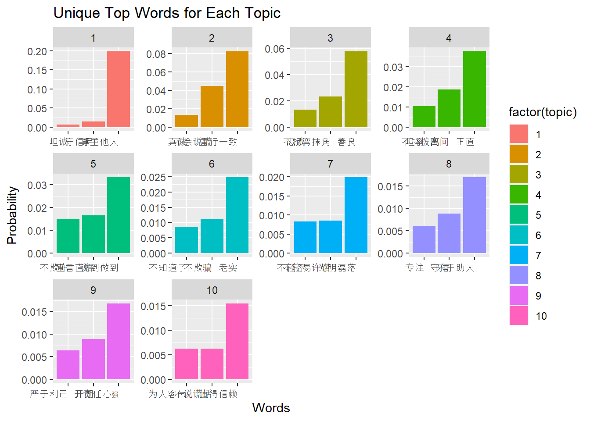

#LDA analysis for Chinese lay conception data
In this project, I tried to perform LDA, a NLP approach, to summarize the lay conception data that I collected in China. Participants gave 5 responses to a question asking “how would they describe a good thinker” in our test. The model I ran here aims to summarize these finding by locating the underlying topics in the data set.
The code was inspired from this blog
Wordlist_Honesty <- read_excel("Data/Wordlist_Honesty.xlsx") %>% filter(is.na(Categories)==FALSE)#cutter <- worker(bylines = T, user = "./Usrwords.txt", stop_word = "./stopWords.txt")
#Wordlist_Honesty <- cutter(Wordlist_Honesty)Wordlist_segged <- readLines("./Wordlist_Honesty.txt", encoding = "UTF-8")
temp <- as.list(Wordlist_segged)
doc.list <- strsplit(as.character(temp),split = " ")term.table <- table(unlist(doc.list))
term.table <- sort(term.table, decreasing = TRUE)vocab <- names(term.table)get.terms <- function(x){
index <- match(x,vocab)
index <- index[!is.na(index)]
rbind(as.integer(index-1),as.integer(rep(1,length(index))))}
documents <- lapply(doc.list, get.terms)K <- 10
G <- 5000
alpha <- 0.10
eta <- 0.02fit <- lda.collapsed.gibbs.sampler(documents = documents, K=K, vocab = vocab, num.iterations = G,
alpha = alpha, eta = eta, initial = NULL, burnin = 0,
compute.log.likelihood = TRUE)theta <- t(apply(fit$document_sums + alpha, 2, function(x)x/sum(x)))
phi <- t(apply(t(fit$topics)+ eta, 2, function(x)x/sum(x)))
term.frequency <- as.integer(term.table)
doc.length <- sapply(documents, function(x) sum(x[2,]))# Extracting the top words for each topic
top_words <- apply(phi, 2, function(topic) {
sort(topic, decreasing = TRUE)[1:10] # Change 10 to the number of top words you want to display
})
# Creating a data frame for top words of each topic
word_df <- data.frame(word = rep(colnames(phi), each = 10),
probability = as.vector(t(top_words)),
topic = rep(1:K, each = 10))
unique_top_words <- word_df %>%
group_by(topic, word) %>%
summarize(max_probability = max(probability)) %>%
top_n(3, max_probability) # Select the top 10 unique words for each topic based on probability## `summarise()` has grouped output by 'topic'.
## You can override using the `.groups`
## argument.# Plotting using ggplot for the unique top words
ggplot(unique_top_words, aes(reorder(word, max_probability), max_probability, fill = factor(topic))) +
geom_bar(stat = "identity") +
facet_wrap(~factor(topic), scales = "free") +
labs(title = "Unique Top Words for Each Topic", x = "Words", y = "Probability") +
theme(axis.text.x = element_text(angle = 0, hjust = 1))